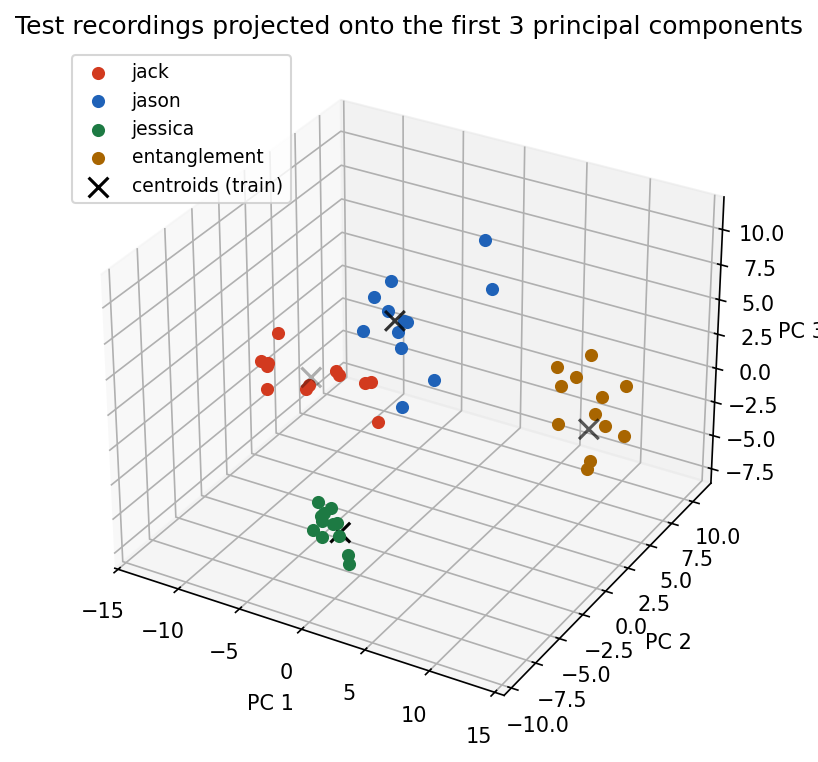

← Back to EE 66 Labs
Voice Recognition
EE 66 | Lab 3 | Fall 2026
Voice Recognition
with the SVD.
A spoken-word classifier built on principal component analysis. Each recording is aligned, enveloped, and projected onto three principal components from the SVD; a nearest-centroid rule then classifies all 48 held-out recordings correctly.
Headline48/48 held-out recordings classified · 4,000 samples reduced to 3 numbers · no neural network
- Course
- EE 66, Signals, Dynamics & Information
- Lab
- Lab 3: Voice Recognition
- Timeline
- Week 8, Fall 2026
- Topics
- SVD, principal component analysis, classification
48/48held-out recordings classified correctly
3principal components per recording (from 4,000 samples)
80.4%of the variance kept by those 3 components
4words in the classifier
Overview
A classifier that recognizes which of four spoken words is in a recording (jack, jason, jessica or entanglement) using principal component analysis (PCA) built on the SVD, with no neural network. It learns from 40 three-second recordings per word, sampled at 5.4 kHz. The same pipeline can also classify words spoken live into a laptop microphone.
Approach
- Split the data. 70/30 per word: 28 training and 12 test recordings each.
- Make recordings comparable. Find where each recording first rises above 25% of its peak, keep 400 samples before that point, and crop to 4,000 samples (about 0.74 s). Then low-pass filter to keep the loudness envelope of the word, and normalize.
- Find the principal components. Stack the 112 training recordings as rows of a 112 × 4,000 matrix, subtract the mean recording, and take the SVD. The top three right singular vectors are the principal components.
- Reduce each recording to three numbers. Project every recording onto those three components, and average each word's training projections into a centroid.
- Classify. A new recording gets the word whose centroid is closest to its projection.
A − 1μT = UΣVT (rows of A are aligned training recordings, μ is the mean recording)
p = V3T(x − μ) → word = argminw ‖p − cw‖
p = V3T(x − μ) → word = argminw ‖p − cw‖
V3 holds the first three principal components, p is a recording's 3-number projection, cw is word w's training centroid.
Results
| Metric | Result |
|---|---|
| Test accuracy (48 held-out recordings) | 48 / 48 · 100% for every word (goal: 80%) |
| Dimensions per recording | 4,000 samples → 3 numbers |
| Variance kept by the top 3 components | 80.4% |

What I learned
- The SVD finds structure you can't see by eye. Three numbers out of 4,000 were enough to separate four words perfectly on unseen recordings.
- Preprocessing sets the ceiling. Most of the work was making 160 messy human recordings consistent before any linear algebra happened. The PCA step itself is only a few lines.
- Simple classifiers work when the representation is good. Once the words separate in PCA space, a nearest-centroid rule needs no training beyond computing averages.
- The geometry matches how the words sound. Jack and jason, which share the same opening sound, land close together. Entanglement, the longest and most different word, sits far from the rest.
Lab starter materials are from the EE 66 course staff. The implementation and write-up are my own; the notebook code is kept private in line with course academic-integrity policy.